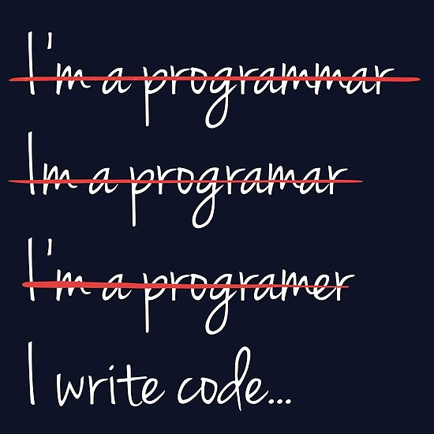

00. Link - The port of Node.JS for embedded devices
01. Link - Yarn Plug'n'Play: Getting rid of node_modules
02. Link - Implementing single file Web Components
03. Link - Chrome's NOSCRIPT Intervention
04. Link - Next Generation Package Management
05. Link - A node.js library to automate chrome/chromium browser
06. Link - An NLP library built in node over Natural, with entity extraction, sentiment analysis, automatic language identify, and so more
